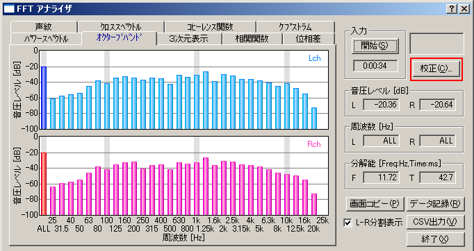
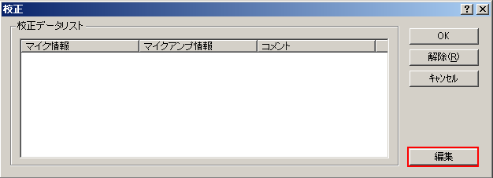
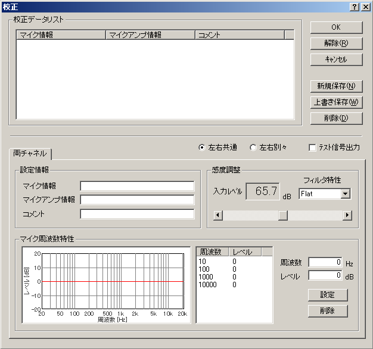
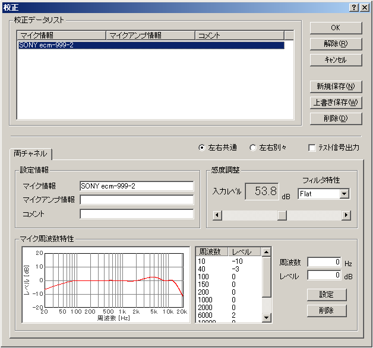

DSSF3 > RA > リファレンス > FFTアナライザ
マイク校正画面

（マイク校正機能）
測定に使用するマイクロホンやアンプの感度と周波数特性を登録しておき、パワースペクトルやオクターブバンドの音圧レベルを校正された音圧レベル（騒音レベル）で表示するための機能です。マイク校正機能を使わない場合は、サウンドデバイスのA/Dコンバータの最大振幅を0dBとした相対値で表示します。
この機能は、マイク校正と名前がついていますが、なにもマイクのみの校正に限らずに、たとえば、マイクとマイクアンプの組で登録しても、あるいは、測定対称単位に作成しておくこともできます。つまり入力信号の校正機能なのです。入力信号に対する補正として使用できるので、あらかじめ入力側の周波数特性がわかっているならば、補正すれば測定対象の騒音レベルや、周波数特性などを、より正確に測定システムに表示させることができます。このマイクの校正機能はFFTアナライザーや、オクターブ分析などで周波数特性をより、現実に近づけて表示させるためには必要です。
騒音計をマイクとして使用する
騒音計のＡＣ出力をマイクおよび、マイクアンプとして使用できます。この場合、AC出力にはマイク入力が、一切のフイルターが無しで、そのまま出力されてきます。これは、測定用コンデンサーマイクとマイクアンプを購入して接続したのと同じです。普通騒音計に接続した場合、騒音値は、どちらで読み取ってもかまいませんが、DSSF3側では、1/3オクターブ分析表示や、パワースペクトラム表示、３次元、自己相関表示、オシロスコープなどを同時使用して、騒音源の周波数や、強さなどのの必要な情報を分析できます。
FFTアナライザにある校正ボタンをクリックすると、下の校正画面が開きます。インストールされた状態では校正データは登録されていません。[編集]ボタンをクリックしてください。すでに校正データを登録してある場合は校正データリストに表示されますので、使用するマイクを選んで[OK]ボタンをクリックしてください。[解除]ボタンをクリックすると、校正データの使用を停止します。

上の画面で編集ボタンをクリックすると、校正画面が拡大し、下のような編集画面が現れます。この画面上でマイクの感度調整、周波数特性カーブの編集を行います。※詳しい方法は、マイク校正、マイク情報の登録方法をご覧下さい。

マイク校正機能補足説明
マイク感度の校正や周波数特性の補正機能を使用して、マイクなどの機材単位に、あるいは同じマイクを使用しても、マイクアンプのある無しなど、運用の仕方にあわせて登録しています。もちろん、FFT分析画面では、自由にワンタッチでこの登録データを補正に使用したり、右の上から３つ目のボタンを使用してキャンセルできます。
感度の補正は、測定システムのダイナミックレンジと、S/Nのいい音圧レベルを得るために入力ボリュームを出来るだけ開く必要があり、測定対象の音の大きさに近い音で、校正しておきます。もともと騒音計にしてもダイナミックレンジが狭いため、あまり変化の激しい音の測定には向きません。どうしても必要な場合は測定対象の音の大きさに合わせて、あらかじめ低、中、高など作っておくことで対処します。
精密さが必要な場合にはできるだけ、マイクや、マイクアンプ等を品質のいいのを使用して、補正をせずに使います。音響の分析には、周波数以外にも、時間応答や、位相特性などが重要で、高時間解像度な分析や、ランニングACF特性などではA特性（人間の耳の特性）などでもよく、できるだけ生の音に近い音を捕らえることが出来るマイクやアンプの動特性が重要です。（周波数特性だけではありません）
もちろん、それらが自由に選択できる点と、調整が自由な点で、これらの意味がすべて理解できる知識と、測定の技術が上がれば、あがるほど、求める精度が高ければ、高いほど、あくまで上級者に対してですが、この機能は非常に有効です。
この例は、SONYのECM-999を正確にマイク校正を行っている例です。そのわけは、スピーカーの周波数特性を測定しようとしているからです。そのため、マイクにメーカーで測定した周波数特性表がついた、高級なマイク（数万円）を使用しています。このマイクは生録用では最高級で、低音から高音まで、音の描写が際立っています。もちろん低域から、高域まで広いダイナミックレンジも持っています。また特性表がついているので、これを使用して1/3オクターブ分析すれば、理論的にはほぼ正確な測定ができます。もちろん、この校正を行わなくて測定した場合、このマイクのカーブが加わった、周波数特性表になるだけです。100Hz以下の低域と、6Khz以上に、山や谷があります。
周波数校正の周波数カーブは、たとえばマイクに特性表が付属していれば、あるいは公表されていれば、その周波数カーブが見た目が同じになるように、登録しておきます。マイク校正をされる場合は、音響測定入門などにも事例がありますので、参考にして下さい

DSSF3 > RA > リファレンス > FFTアナライザ